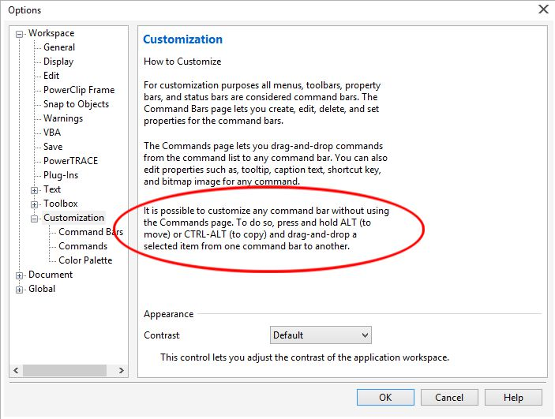

Кнопка "Стиль линии" на "Панели свойств"
Как оказалось, настройка "Панели свойств" (далее - ПС) не совсем тривиальная задача.
Первый вопрос, на который хотелось бы получить ответ: что из себя представляет функция "Стиль линии" и где она "живет"? В списке команд её нет, в отличии от "Толщины абриса". При открытом списке команд (Инструменты - Настройка - Команды - Все) нажатие на этой кнопке не приводит к выбору такой команды из списка всех команд. При нажатии на другие кнопки на ПС происходит автоматическое выделение соответствующей команды в списке. Это что, команда-невидимка? ))
Данная функция автоматически появляется на ПС при выборе инструмента рисования линии. А вот при выборе фигуры замкнутого контура такой функции в ПС не предоставляется и для изменения стиля контура надо открывать "Свойства объекта".
Тем не менее, мне (а может это произошло случайно, хотя я менял состав ПС) ранее каким-то образом удалось поместить на ПС эту кнопку при рисовании прямоугольника. Теперь на рисунке есть прямоугольник (несколько копий его с разными размерами), выделение которого приводит к появлению работающей кнопки "Стиль линии" на ПС. Если же рисовать новый прямоугольник через инструменты, то ее уже нет.
Вот откуда появилась кнопка "Стиль линии" на ПС при рисовании примоугольника и как ее туда снова поместить так, чтобы она там появлялась "по умолчанию" при выборе в инструментах любого замкнутого контура?
ЗЫ искал в инсрукциях, но ответа не нашел.
Нашел причину различия для прямоугольников. Прямоугольник был преобразован в "кривую", что можно обнаружить в свойствах объекта. ))
Остался вопрос о том, "где живет" команда "Стиль линии"?
F12 - Style и кнопка Edit Style
это не команда - это стиль :) стиль контура
или в одной корзине - в докере Object Style - [CTRL+F5]
Спасибо, dastin.
Однако у меня осталось некоторое недоумение. Дело в том, что создав контур "прямоугольника" и не преобразуя его в "кривые", мы можем зайти в "Свойства объекта" и там изменить стиль линии контура. В связи с этим и возникает логичный вопрос - а почему нет возможности вынести эту функцию в форме кнопки на ПС? Это раз.
По [CTRL+F5] действительно открывается меню "Стили объектов". Но (!) в нем в одном ряду со стилем линии присутствуют такие функции, как толщина и цвет абриса (линии), которые, стало быть, также являются стилями объекта. Это не мешает данным стилям присутствовать в списке команд , что позволяет юзеру произвольно разместить кнопки этих функций на ПС. Это два.
Я не вижу кардинальной разницы между толщиной абриса и стилем (сплошная - прерывистая) этого абриса. Толщина - тоже стиль. И то и другое изменяет формулу, по которой формируется линия контура. Так почему одно можно поместить в список команд (создать кнопку на ПС), а другое - нельзя?
Есть логичный ответ? ))
ЗЫ а чем стиль отличается от команды с т.з. действия юзера? И то и другое вызывается к жизни наведением курсора на некое указующее изображение и нажатие кнопки на мыше, что эквивалентно действию "Команда". Само-то не меняется, только по команде. ))
alich, Вы сами ответили на свой вопрос, стиль - это не свойства абриса (т. е. не только толщина). Что касается кнопки на ПС, все очень просто. Скопируйте эту кнопку из ПС инструмента Линия на другую панель, а потом перетащите ее на ПС прямоугольника. Для копирования, удерживайте Ctrl + Alt, а для перемещения Alt. В настройках этой кнопки действительно нет.
Baryga88, спасибо за науку!
Значит все-таки можно! ))
Стиль - это и толщина, и цвет, и форма. Иногда и запах. ))
Вот что пишется в официальной справке Внешняя ссылка
"Форматирование линий и абрисов
Параметры линий настраиваются так же(!) , как параметры абрисов замкнутых фигур, например эллипсов и многоугольников. В некоторых программах абрисы называются мазками или толстыми линиями.
Отображение линий и абрисов можно изменить с помощью элементов управления в области Абрис окна настройки Свойства объекта, в диалоговом окне Перо абриса и на панели свойств(!). Например, можно настроить цвет, ширину и стиль линий и абрисов."
Т.е. говорится о "форматировании" как общем принципе изменения свойств как линии так и абрисов. Причем не абрис уподобляется линии, а наоборот, линия представлена как часть абриса ("так же"). И обратите внимание, что за словами "...и на панели свойств" перечисляются все команды стилевого форматирования. Значит для абриса обязательно наличие на ПС кнопки "Стиль линии". Но в справке ничего не сказано о том, как исхитриться и скопировать кнопку из ПС одного инструмента в ПС другого. Куда проще было добавить эту кнопку в перечень команд для абриса наряду с толщиной и цветом.
Baryga88, спасибо за науку!
Значит все-таки можно! ))
Стиль - это и толщина, и цвет, и форма. Иногда и запах. ))
Официальная справка не делает принципиальных различий между этими функциями "форматирования".
Если бы было "все очень просто", то это было бы прописано в краткой официальной справке. Но там этого нет (перенос кнопки из ПС одного инструмента в ПС другого).
Проще было бы разместить "Стиль линии" в списке команд по форматированию абриса.
alich, Справка - это конечно хорошо и похвально, что Вы ее читаете (многие почему-то даже это не делают). Но мой совет, читайте также и подсказки (см. рис.).

Как видите, в самом окне Параметры, есть четкие инструкции, как настраивать Панели инструментов (если есть такая возможность), без обращения к конкретным командам в Настройках.
Baryga88, согласен, что это можно считать подсказкой.
Однако опять-таки обращаю ваше внимание на то , что речь идет о панели КОМАНД.
Я попытался найти эту команду в штатном списке команд, но не нашел. У меня не было нужды перетаскивать команды из одной панели в другую, т.к. настраивал панель СВОЙСТВ конкретного инструмента "Прямоугольник" согласно официальной справки. В приведенной вами подсказке из настройки речь идет о панели команд, в которой панель свойств является только её частью. Следуя справке невозможно напрямую перетащить команду из одной панели свойств в другую, так как "внутри" этого действия необходимо переключать инструменты.
Как видите, сама возможность перетаскивания кнопки "Стиль линии" по намеку в "Настройке" о модификации панели КОМАНД прямо указывает на то, что "Стиль линии" является командой, что еще раз подтверждает вывод из текста официальной справки - панель свойств, где находится "Стиль линии", является одной из панелей команд ("панель стилей", не являющаяся панелью команд, не существует). И место этой команде в списке команд "Заливка и абрис". Это чисто логический вывод из контекста справки и подсказки по настройке, а также метода использования данной команды в сравнении с другими командами.
ЗЫ Еще одна странность логики программеров Корела: подсказка есть, а четкого описания в справке нет. ))